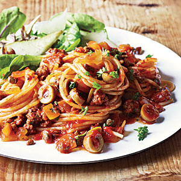

| Spanish Spaghetti with Olives | |
|---|---|
|  |
1. Combine 1 cup water, rice, and 1/4 teaspoon salt in a small saucepan; bring to a boil. Cover, reduce heat, and simmer 15 minutes; remove from heat. Let stand 10 minutes; gently stir in peas and vinegar.
2. Heat a medium skillet over high heat. Coat pan with cooking spray. Add pork; sauté 5 minutes. Sprinkle with 1/4 teaspoon salt. Add onion and garlic; stir-fry 2 minutes. Stir in broth and next 5 ingredients (through anchovy); bring to a boil. Reduce heat; simmer 5 minutes or until slightly thick. Spoon 1/2 cup rice on each of 4 plates; top each serving with 1/2 cup pork mixture. Serve with lime wedges. |